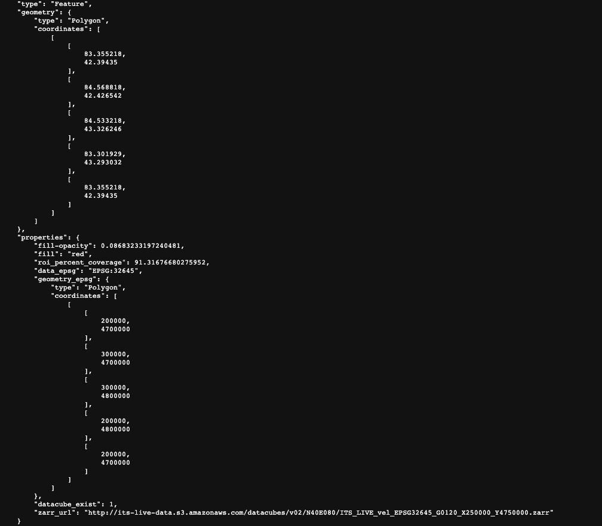

Accessing ITS_LIVE data via S3 bucket#
This notebook will demonstrate how to access cloud-hosted Inter-mission Time Series of Land Ice Velocity and Elevation (ITS_LIVE) data from AWS S3 buckets. Here you will find examples of how to successfully access cloud-hosted data as well as some common errors and issues you may run into along the way, what they mean, and how to resolve them.
Learning goals:
accessing data stored in S3 buckets
%load_ext watermark
import geopandas as gpd
import os
import numpy as np
import xarray as xr
import rioxarray as rxr
import matplotlib.pyplot as plt
import matplotlib.ticker as mticker
from shapely.geometry import Polygon
from shapely.geometry import Point
import cartopy.crs as ccrs
from cartopy.mpl.gridliner import LONGITUDE_FORMATTER, LATITUDE_FORMATTER
import cartopy
import cartopy.feature as cfeature
import json
import s3fs
%config InlineBackend.figure_format='retina'
%watermark
Last updated: 2023-07-08T00:39:03.593831-06:00
Python implementation: CPython
Python version : 3.11.3
IPython version : 8.13.2
Compiler : GCC 11.3.0
OS : Linux
Release : 5.19.0-76051900-generic
Machine : x86_64
Processor : x86_64
CPU cores : 16
Architecture: 64bit
%watermark --iversions
geopandas : 0.13.0
numpy : 1.24.3
s3fs : 2023.5.0
matplotlib: 3.7.1
xarray : 2023.5.0
cartopy : 0.21.1
json : 2.0.9
rioxarray : 0.14.1
ITS_LIVE data cube catalog#
The ITS_LIVE project details a number of data access options on their website. Here, we will be accessing ITS_LIVE data in the form of zarr data cubes that are stored in s3 buckets hosted by Amazon Web Services (AWS).
Let’s begin by looking at the GeoJSON Data Cubes Catalog. This catalog contains spatial information and properties of ITS_LIVE data cubes as well as the url used to access each cube. Let’s take a look at the entry for a single data cube and the information that it contains:

The top portion of the picture shows the spatial extent of the data cube in lat/lon units. Below that, we have properties such as the epsg code of the coordinate reference system, the spatial footprint in projected units and the url of the zarr object.
Let’s take a look at the url more in-depth:

From this link we can see that we are looking at its_live data located in an s3 bucket hosted by amazon AWS. We cans see that we’re looking in the data cube directory and what seems to be version 2. The next bit gives us information about the global location of the cube (N40E080). The actual file name ITS_LIVE_vel_EPSG32645_G0120_X250000_Y4750000.zarr tells us that we are looking at ice velocity data (its_live also has elevation data), in the CRS associated with EPSG 32645 (this code indicates UTM zone 45N). X250000_Y4750000 tells us more about the spatial footprint of the datacube within the UTM zone.
NOTE This catalog provides http links to the zarr objects. To successfully point to the objects that we’re looking for in s3 buckets, we need to make a few changes to the links:
replace ‘http’ with ‘s3’
delete ‘.s3.amazonaws.com’
so the correct url should read:
`s3://its-live-data/datacubes/v02/N40E080/ITS_LIVE_vel_EPSG32645_G0120_X250000_Y4750000.zarr`
Accessing ITS_LIVE data from python#
We’ve found the url associated with the tile we want to access, let’s try to open the data cube using xarray:
url1 = 's3://its-live-data/datacubes/v02/N40E080/ITS_LIVE_vel_EPSG32645_G0120_X250000_Y4750000.zarr'
dc1 = xr.open_dataset(url1, engine = 'zarr')
---------------------------------------------------------------------------
NoCredentialsError Traceback (most recent call last)
Cell In[5], line 2
1 url1 = 's3://its-live-data/datacubes/v02/N40E080/ITS_LIVE_vel_EPSG32645_G0120_X250000_Y4750000.zarr'
----> 2 dc1 = xr.open_dataset(url1, engine = 'zarr')
File ~/miniconda3/envs/itslive_tutorial/lib/python3.11/site-packages/xarray/backends/api.py:566, in open_dataset(filename_or_obj, engine, chunks, cache, decode_cf, mask_and_scale, decode_times, decode_timedelta, use_cftime, concat_characters, decode_coords, drop_variables, inline_array, chunked_array_type, from_array_kwargs, backend_kwargs, **kwargs)
554 decoders = _resolve_decoders_kwargs(
555 decode_cf,
556 open_backend_dataset_parameters=backend.open_dataset_parameters,
(...)
562 decode_coords=decode_coords,
563 )
565 overwrite_encoded_chunks = kwargs.pop("overwrite_encoded_chunks", None)
--> 566 backend_ds = backend.open_dataset(
567 filename_or_obj,
568 drop_variables=drop_variables,
569 **decoders,
570 **kwargs,
571 )
572 ds = _dataset_from_backend_dataset(
573 backend_ds,
574 filename_or_obj,
(...)
584 **kwargs,
585 )
586 return ds
File ~/miniconda3/envs/itslive_tutorial/lib/python3.11/site-packages/xarray/backends/zarr.py:927, in ZarrBackendEntrypoint.open_dataset(self, filename_or_obj, mask_and_scale, decode_times, concat_characters, decode_coords, drop_variables, use_cftime, decode_timedelta, group, mode, synchronizer, consolidated, chunk_store, storage_options, stacklevel, zarr_version)
906 def open_dataset( # type: ignore[override] # allow LSP violation, not supporting **kwargs
907 self,
908 filename_or_obj: str | os.PathLike[Any] | BufferedIOBase | AbstractDataStore,
(...)
924 zarr_version=None,
925 ) -> Dataset:
926 filename_or_obj = _normalize_path(filename_or_obj)
--> 927 store = ZarrStore.open_group(
928 filename_or_obj,
929 group=group,
930 mode=mode,
931 synchronizer=synchronizer,
932 consolidated=consolidated,
933 consolidate_on_close=False,
934 chunk_store=chunk_store,
935 storage_options=storage_options,
936 stacklevel=stacklevel + 1,
937 zarr_version=zarr_version,
938 )
940 store_entrypoint = StoreBackendEntrypoint()
941 with close_on_error(store):
File ~/miniconda3/envs/itslive_tutorial/lib/python3.11/site-packages/xarray/backends/zarr.py:420, in ZarrStore.open_group(cls, store, mode, synchronizer, group, consolidated, consolidate_on_close, chunk_store, storage_options, append_dim, write_region, safe_chunks, stacklevel, zarr_version)
418 if consolidated is None:
419 try:
--> 420 zarr_group = zarr.open_consolidated(store, **open_kwargs)
421 except KeyError:
422 try:
File ~/miniconda3/envs/itslive_tutorial/lib/python3.11/site-packages/zarr/convenience.py:1299, in open_consolidated(store, metadata_key, mode, **kwargs)
1296 metadata_key = 'meta/root/consolidated/' + metadata_key
1298 # setup metadata store
-> 1299 meta_store = ConsolidatedStoreClass(store, metadata_key=metadata_key)
1301 # pass through
1302 chunk_store = kwargs.pop('chunk_store', None) or store
File ~/miniconda3/envs/itslive_tutorial/lib/python3.11/site-packages/zarr/storage.py:2886, in ConsolidatedMetadataStore.__init__(self, store, metadata_key)
2883 self.store = Store._ensure_store(store)
2885 # retrieve consolidated metadata
-> 2886 meta = json_loads(self.store[metadata_key])
2888 # check format of consolidated metadata
2889 consolidated_format = meta.get('zarr_consolidated_format', None)
File ~/miniconda3/envs/itslive_tutorial/lib/python3.11/site-packages/zarr/storage.py:1393, in FSStore.__getitem__(self, key)
1391 key = self._normalize_key(key)
1392 try:
-> 1393 return self.map[key]
1394 except self.exceptions as e:
1395 raise KeyError(key) from e
File ~/miniconda3/envs/itslive_tutorial/lib/python3.11/site-packages/fsspec/mapping.py:143, in FSMap.__getitem__(self, key, default)
141 k = self._key_to_str(key)
142 try:
--> 143 result = self.fs.cat(k)
144 except self.missing_exceptions:
145 if default is not None:
File ~/miniconda3/envs/itslive_tutorial/lib/python3.11/site-packages/fsspec/asyn.py:115, in sync_wrapper.<locals>.wrapper(*args, **kwargs)
112 @functools.wraps(func)
113 def wrapper(*args, **kwargs):
114 self = obj or args[0]
--> 115 return sync(self.loop, func, *args, **kwargs)
File ~/miniconda3/envs/itslive_tutorial/lib/python3.11/site-packages/fsspec/asyn.py:100, in sync(loop, func, timeout, *args, **kwargs)
98 raise FSTimeoutError from return_result
99 elif isinstance(return_result, BaseException):
--> 100 raise return_result
101 else:
102 return return_result
File ~/miniconda3/envs/itslive_tutorial/lib/python3.11/site-packages/fsspec/asyn.py:55, in _runner(event, coro, result, timeout)
53 coro = asyncio.wait_for(coro, timeout=timeout)
54 try:
---> 55 result[0] = await coro
56 except Exception as ex:
57 result[0] = ex
File ~/miniconda3/envs/itslive_tutorial/lib/python3.11/site-packages/fsspec/asyn.py:414, in AsyncFileSystem._cat(self, path, recursive, on_error, batch_size, **kwargs)
412 ex = next(filter(is_exception, out), False)
413 if ex:
--> 414 raise ex
415 if (
416 len(paths) > 1
417 or isinstance(path, list)
418 or paths[0] != self._strip_protocol(path)
419 ):
420 return {
421 k: v
422 for k, v in zip(paths, out)
423 if on_error != "omit" or not is_exception(v)
424 }
File ~/miniconda3/envs/itslive_tutorial/lib/python3.11/asyncio/tasks.py:442, in wait_for(fut, timeout)
439 loop = events.get_running_loop()
441 if timeout is None:
--> 442 return await fut
444 if timeout <= 0:
445 fut = ensure_future(fut, loop=loop)
File ~/miniconda3/envs/itslive_tutorial/lib/python3.11/site-packages/s3fs/core.py:1050, in S3FileSystem._cat_file(self, path, version_id, start, end)
1047 finally:
1048 resp["Body"].close()
-> 1050 return await _error_wrapper(_call_and_read, retries=self.retries)
File ~/miniconda3/envs/itslive_tutorial/lib/python3.11/site-packages/s3fs/core.py:140, in _error_wrapper(func, args, kwargs, retries)
138 err = e
139 err = translate_boto_error(err)
--> 140 raise err
File ~/miniconda3/envs/itslive_tutorial/lib/python3.11/site-packages/s3fs/core.py:113, in _error_wrapper(func, args, kwargs, retries)
111 for i in range(retries):
112 try:
--> 113 return await func(*args, **kwargs)
114 except S3_RETRYABLE_ERRORS as e:
115 err = e
File ~/miniconda3/envs/itslive_tutorial/lib/python3.11/site-packages/s3fs/core.py:1037, in S3FileSystem._cat_file.<locals>._call_and_read()
1036 async def _call_and_read():
-> 1037 resp = await self._call_s3(
1038 "get_object",
1039 Bucket=bucket,
1040 Key=key,
1041 **version_id_kw(version_id or vers),
1042 **head,
1043 **self.req_kw,
1044 )
1045 try:
1046 return await resp["Body"].read()
File ~/miniconda3/envs/itslive_tutorial/lib/python3.11/site-packages/s3fs/core.py:348, in S3FileSystem._call_s3(self, method, *akwarglist, **kwargs)
346 logger.debug("CALL: %s - %s - %s", method.__name__, akwarglist, kw2)
347 additional_kwargs = self._get_s3_method_kwargs(method, *akwarglist, **kwargs)
--> 348 return await _error_wrapper(
349 method, kwargs=additional_kwargs, retries=self.retries
350 )
File ~/miniconda3/envs/itslive_tutorial/lib/python3.11/site-packages/s3fs/core.py:140, in _error_wrapper(func, args, kwargs, retries)
138 err = e
139 err = translate_boto_error(err)
--> 140 raise err
File ~/miniconda3/envs/itslive_tutorial/lib/python3.11/site-packages/s3fs/core.py:113, in _error_wrapper(func, args, kwargs, retries)
111 for i in range(retries):
112 try:
--> 113 return await func(*args, **kwargs)
114 except S3_RETRYABLE_ERRORS as e:
115 err = e
File ~/miniconda3/envs/itslive_tutorial/lib/python3.11/site-packages/aiobotocore/client.py:354, in AioBaseClient._make_api_call(self, operation_name, api_params)
352 else:
353 apply_request_checksum(request_dict)
--> 354 http, parsed_response = await self._make_request(
355 operation_model, request_dict, request_context
356 )
358 await self.meta.events.emit(
359 'after-call.{service_id}.{operation_name}'.format(
360 service_id=service_id, operation_name=operation_name
(...)
365 context=request_context,
366 )
368 if http.status_code >= 300:
File ~/miniconda3/envs/itslive_tutorial/lib/python3.11/site-packages/aiobotocore/client.py:379, in AioBaseClient._make_request(self, operation_model, request_dict, request_context)
375 async def _make_request(
376 self, operation_model, request_dict, request_context
377 ):
378 try:
--> 379 return await self._endpoint.make_request(
380 operation_model, request_dict
381 )
382 except Exception as e:
383 await self.meta.events.emit(
384 'after-call-error.{service_id}.{operation_name}'.format(
385 service_id=self._service_model.service_id.hyphenize(),
(...)
389 context=request_context,
390 )
File ~/miniconda3/envs/itslive_tutorial/lib/python3.11/site-packages/aiobotocore/endpoint.py:96, in AioEndpoint._send_request(self, request_dict, operation_model)
94 context = request_dict['context']
95 self._update_retries_context(context, attempts)
---> 96 request = await self.create_request(request_dict, operation_model)
97 success_response, exception = await self._get_response(
98 request, operation_model, context
99 )
100 while await self._needs_retry(
101 attempts,
102 operation_model,
(...)
105 exception,
106 ):
File ~/miniconda3/envs/itslive_tutorial/lib/python3.11/site-packages/aiobotocore/endpoint.py:84, in AioEndpoint.create_request(self, params, operation_model)
80 service_id = operation_model.service_model.service_id.hyphenize()
81 event_name = 'request-created.{service_id}.{op_name}'.format(
82 service_id=service_id, op_name=operation_model.name
83 )
---> 84 await self._event_emitter.emit(
85 event_name,
86 request=request,
87 operation_name=operation_model.name,
88 )
89 prepared_request = self.prepare_request(request)
90 return prepared_request
File ~/miniconda3/envs/itslive_tutorial/lib/python3.11/site-packages/aiobotocore/hooks.py:66, in AioHierarchicalEmitter._emit(self, event_name, kwargs, stop_on_response)
63 logger.debug('Event %s: calling handler %s', event_name, handler)
65 # Await the handler if its a coroutine.
---> 66 response = await resolve_awaitable(handler(**kwargs))
67 responses.append((handler, response))
68 if stop_on_response and response is not None:
File ~/miniconda3/envs/itslive_tutorial/lib/python3.11/site-packages/aiobotocore/_helpers.py:15, in resolve_awaitable(obj)
13 async def resolve_awaitable(obj):
14 if inspect.isawaitable(obj):
---> 15 return await obj
17 return obj
File ~/miniconda3/envs/itslive_tutorial/lib/python3.11/site-packages/aiobotocore/signers.py:24, in AioRequestSigner.handler(self, operation_name, request, **kwargs)
19 async def handler(self, operation_name=None, request=None, **kwargs):
20 # This is typically hooked up to the "request-created" event
21 # from a client's event emitter. When a new request is created
22 # this method is invoked to sign the request.
23 # Don't call this method directly.
---> 24 return await self.sign(operation_name, request)
File ~/miniconda3/envs/itslive_tutorial/lib/python3.11/site-packages/aiobotocore/signers.py:82, in AioRequestSigner.sign(self, operation_name, request, region_name, signing_type, expires_in, signing_name)
79 else:
80 raise e
---> 82 auth.add_auth(request)
File ~/miniconda3/envs/itslive_tutorial/lib/python3.11/site-packages/botocore/auth.py:418, in SigV4Auth.add_auth(self, request)
416 def add_auth(self, request):
417 if self.credentials is None:
--> 418 raise NoCredentialsError()
419 datetime_now = datetime.datetime.utcnow()
420 request.context['timestamp'] = datetime_now.strftime(SIGV4_TIMESTAMP)
NoCredentialsError: Unable to locate credentials
As you can see, this doesn’t quite work. We need to specify a bit more information for xarray to be able to access and load the data cube.
Specifically we need to specify
storage_options={"anon": True}.This is a
backend_kwargrelating to how we are interacting with the AWS S3 bucket. You can find more information here.
I set
chunks="auto"which introduces dask into our workflow.
dc1 = xr.open_dataset(url1, engine= 'zarr', chunks="auto",
storage_options = {'anon':True})
dc1
<xarray.Dataset>
Dimensions: (mid_date: 15725, y: 834, x: 833)
Coordinates:
* mid_date (mid_date) datetime64[ns] 2020-02-03T17:26:57....
* x (x) float64 2.001e+05 2.002e+05 ... 2.999e+05
* y (y) float64 4.8e+06 4.8e+06 ... 4.7e+06 4.7e+06
Data variables: (12/54)
acquisition_date_img1 (mid_date) datetime64[ns] dask.array<chunksize=(15725,), meta=np.ndarray>
acquisition_date_img2 (mid_date) datetime64[ns] dask.array<chunksize=(15725,), meta=np.ndarray>
autoRIFT_software_version (mid_date) <U5 dask.array<chunksize=(15725,), meta=np.ndarray>
chip_size_height (mid_date, y, x) float32 dask.array<chunksize=(15725, 40, 40), meta=np.ndarray>
chip_size_width (mid_date, y, x) float32 dask.array<chunksize=(15725, 40, 40), meta=np.ndarray>
date_center (mid_date) datetime64[ns] dask.array<chunksize=(15725,), meta=np.ndarray>
... ...
vy_error_mask (mid_date) float64 dask.array<chunksize=(15725,), meta=np.ndarray>
vy_error_modeled (mid_date) float64 dask.array<chunksize=(15725,), meta=np.ndarray>
vy_error_slow (mid_date) float64 dask.array<chunksize=(15725,), meta=np.ndarray>
vy_stable_shift (mid_date) float64 dask.array<chunksize=(15725,), meta=np.ndarray>
vy_stable_shift_mask (mid_date) float64 dask.array<chunksize=(15725,), meta=np.ndarray>
vy_stable_shift_slow (mid_date) float64 dask.array<chunksize=(15725,), meta=np.ndarray>
Attributes: (12/18)
GDAL_AREA_OR_POINT: Area
author: ITS_LIVE, a NASA MEaSUREs project (its-live.j...
autoRIFT_parameter_file: http://its-live-data.s3.amazonaws.com/autorif...
datacube_software_version: 1.0
date_created: 09-Jun-2022 04:57:12
date_updated: 09-Jun-2022 04:57:12
... ...
s3: s3://its-live-data/datacubes/v02/N40E080/ITS_...
skipped_granules: s3://its-live-data/datacubes/v02/N40E080/ITS_...
time_standard_img1: UTC
time_standard_img2: UTC
title: ITS_LIVE datacube of image_pair velocities
url: https://its-live-data.s3.amazonaws.com/datacu...This one worked! Let’s stop here and define a function that we can use for a quick view of this data.
def get_bounds_polygon(input_xr):
xmin = input_xr.coords['x'].data.min()
xmax = input_xr.coords['x'].data.max()
ymin = input_xr.coords['y'].data.min()
ymax = input_xr.coords['y'].data.max()
pts_ls = [(xmin, ymin), (xmax, ymin),(xmax, ymax), (xmin, ymax), (xmin, ymin)]
crs = f"epsg:{input_xr.mapping.spatial_epsg}"
polygon_geom = Polygon(pts_ls)
polygon = gpd.GeoDataFrame(index=[0], crs=crs, geometry=[polygon_geom])
return polygon
def get_bbox_single(input_xr):
'''Takes input xr object (from itslive data cube), plots a quick map of the footprint.
currently only working for granules in crs epsg 32645'''
polygon = get_bounds_polygon(input_xr).to_crs('epsg:4326')
bounds = polygon.total_bounds
bounds_format = [bounds[0]-15, bounds[2]+15, bounds[1]-15, bounds[3]+15]
states_provinces = cfeature.NaturalEarthFeature(
category = 'cultural',
name = 'admin_1_states_provinces_lines',
scale='50m',
facecolor='none'
)
fig = plt.figure()
ax = fig.add_subplot(111, projection = ccrs.PlateCarree())
ax.stock_img()
ax.add_feature(cfeature.COASTLINE)
ax.add_feature(cfeature.LAND)
ax.add_feature(states_provinces)
ax.set_extent(bounds_format, crs = ccrs.PlateCarree())
polygon.plot(ax=ax, facecolor = 'none', edgecolor='red', lw=1.);
Let’s also write a quick function for reading in s3 objects from http urls. This will come in handy when we’re trying to test multiple urls
def read_in_s3(http_url, chunks = 'auto'):
s3_url = http_url.replace('http','s3')
s3_url = s3_url.replace('.s3.amazonaws.com','')
datacube = xr.open_dataset(s3_url, engine = 'zarr',
storage_options={'anon':True},
chunks = chunks)
return datacube
Now let’s take a look at the cube we’ve already read in:
get_bbox_single(dc1)

Now we can see where this granule lies.
Let’s try a url that we know won’t work. Sometimes data cubes are moved around within the cloud repositories and it is helpful to know the error that arises in this situation:
#this url doesn't work
url2 = 'http://its-live-data.s3.amazonaws.com/datacubes/v02/wrong_url_here.zarr'
dc2 = read_in_s3(url2)
---------------------------------------------------------------------------
NoSuchKey Traceback (most recent call last)
File ~/miniconda3/envs/itslive_tutorial/lib/python3.11/site-packages/s3fs/core.py:113, in _error_wrapper(func, args, kwargs, retries)
112 try:
--> 113 return await func(*args, **kwargs)
114 except S3_RETRYABLE_ERRORS as e:
File ~/miniconda3/envs/itslive_tutorial/lib/python3.11/site-packages/aiobotocore/client.py:371, in AioBaseClient._make_api_call(self, operation_name, api_params)
370 error_class = self.exceptions.from_code(error_code)
--> 371 raise error_class(parsed_response, operation_name)
372 else:
NoSuchKey: An error occurred (NoSuchKey) when calling the GetObject operation: The specified key does not exist.
The above exception was the direct cause of the following exception:
FileNotFoundError Traceback (most recent call last)
File ~/miniconda3/envs/itslive_tutorial/lib/python3.11/site-packages/fsspec/mapping.py:143, in FSMap.__getitem__(self, key, default)
142 try:
--> 143 result = self.fs.cat(k)
144 except self.missing_exceptions:
File ~/miniconda3/envs/itslive_tutorial/lib/python3.11/site-packages/fsspec/asyn.py:115, in sync_wrapper.<locals>.wrapper(*args, **kwargs)
114 self = obj or args[0]
--> 115 return sync(self.loop, func, *args, **kwargs)
File ~/miniconda3/envs/itslive_tutorial/lib/python3.11/site-packages/fsspec/asyn.py:100, in sync(loop, func, timeout, *args, **kwargs)
99 elif isinstance(return_result, BaseException):
--> 100 raise return_result
101 else:
File ~/miniconda3/envs/itslive_tutorial/lib/python3.11/site-packages/fsspec/asyn.py:55, in _runner(event, coro, result, timeout)
54 try:
---> 55 result[0] = await coro
56 except Exception as ex:
File ~/miniconda3/envs/itslive_tutorial/lib/python3.11/site-packages/fsspec/asyn.py:414, in AsyncFileSystem._cat(self, path, recursive, on_error, batch_size, **kwargs)
413 if ex:
--> 414 raise ex
415 if (
416 len(paths) > 1
417 or isinstance(path, list)
418 or paths[0] != self._strip_protocol(path)
419 ):
File ~/miniconda3/envs/itslive_tutorial/lib/python3.11/asyncio/tasks.py:442, in wait_for(fut, timeout)
441 if timeout is None:
--> 442 return await fut
444 if timeout <= 0:
File ~/miniconda3/envs/itslive_tutorial/lib/python3.11/site-packages/s3fs/core.py:1050, in S3FileSystem._cat_file(self, path, version_id, start, end)
1048 resp["Body"].close()
-> 1050 return await _error_wrapper(_call_and_read, retries=self.retries)
File ~/miniconda3/envs/itslive_tutorial/lib/python3.11/site-packages/s3fs/core.py:140, in _error_wrapper(func, args, kwargs, retries)
139 err = translate_boto_error(err)
--> 140 raise err
File ~/miniconda3/envs/itslive_tutorial/lib/python3.11/site-packages/s3fs/core.py:113, in _error_wrapper(func, args, kwargs, retries)
112 try:
--> 113 return await func(*args, **kwargs)
114 except S3_RETRYABLE_ERRORS as e:
File ~/miniconda3/envs/itslive_tutorial/lib/python3.11/site-packages/s3fs/core.py:1037, in S3FileSystem._cat_file.<locals>._call_and_read()
1036 async def _call_and_read():
-> 1037 resp = await self._call_s3(
1038 "get_object",
1039 Bucket=bucket,
1040 Key=key,
1041 **version_id_kw(version_id or vers),
1042 **head,
1043 **self.req_kw,
1044 )
1045 try:
File ~/miniconda3/envs/itslive_tutorial/lib/python3.11/site-packages/s3fs/core.py:348, in S3FileSystem._call_s3(self, method, *akwarglist, **kwargs)
347 additional_kwargs = self._get_s3_method_kwargs(method, *akwarglist, **kwargs)
--> 348 return await _error_wrapper(
349 method, kwargs=additional_kwargs, retries=self.retries
350 )
File ~/miniconda3/envs/itslive_tutorial/lib/python3.11/site-packages/s3fs/core.py:140, in _error_wrapper(func, args, kwargs, retries)
139 err = translate_boto_error(err)
--> 140 raise err
FileNotFoundError: The specified key does not exist.
During handling of the above exception, another exception occurred:
KeyError Traceback (most recent call last)
File ~/miniconda3/envs/itslive_tutorial/lib/python3.11/site-packages/zarr/storage.py:1393, in FSStore.__getitem__(self, key)
1392 try:
-> 1393 return self.map[key]
1394 except self.exceptions as e:
File ~/miniconda3/envs/itslive_tutorial/lib/python3.11/site-packages/fsspec/mapping.py:147, in FSMap.__getitem__(self, key, default)
146 return default
--> 147 raise KeyError(key)
148 return result
KeyError: '.zmetadata'
The above exception was the direct cause of the following exception:
KeyError Traceback (most recent call last)
File ~/miniconda3/envs/itslive_tutorial/lib/python3.11/site-packages/xarray/backends/zarr.py:420, in ZarrStore.open_group(cls, store, mode, synchronizer, group, consolidated, consolidate_on_close, chunk_store, storage_options, append_dim, write_region, safe_chunks, stacklevel, zarr_version)
419 try:
--> 420 zarr_group = zarr.open_consolidated(store, **open_kwargs)
421 except KeyError:
File ~/miniconda3/envs/itslive_tutorial/lib/python3.11/site-packages/zarr/convenience.py:1299, in open_consolidated(store, metadata_key, mode, **kwargs)
1298 # setup metadata store
-> 1299 meta_store = ConsolidatedStoreClass(store, metadata_key=metadata_key)
1301 # pass through
File ~/miniconda3/envs/itslive_tutorial/lib/python3.11/site-packages/zarr/storage.py:2886, in ConsolidatedMetadataStore.__init__(self, store, metadata_key)
2885 # retrieve consolidated metadata
-> 2886 meta = json_loads(self.store[metadata_key])
2888 # check format of consolidated metadata
File ~/miniconda3/envs/itslive_tutorial/lib/python3.11/site-packages/zarr/storage.py:1395, in FSStore.__getitem__(self, key)
1394 except self.exceptions as e:
-> 1395 raise KeyError(key) from e
KeyError: '.zmetadata'
During handling of the above exception, another exception occurred:
GroupNotFoundError Traceback (most recent call last)
File ~/miniconda3/envs/itslive_tutorial/lib/python3.11/site-packages/xarray/backends/zarr.py:423, in ZarrStore.open_group(cls, store, mode, synchronizer, group, consolidated, consolidate_on_close, chunk_store, storage_options, append_dim, write_region, safe_chunks, stacklevel, zarr_version)
422 try:
--> 423 zarr_group = zarr.open_group(store, **open_kwargs)
424 warnings.warn(
425 "Failed to open Zarr store with consolidated metadata, "
426 "but successfully read with non-consolidated metadata. "
(...)
437 stacklevel=stacklevel,
438 )
File ~/miniconda3/envs/itslive_tutorial/lib/python3.11/site-packages/zarr/hierarchy.py:1443, in open_group(store, mode, cache_attrs, synchronizer, path, chunk_store, storage_options, zarr_version, meta_array)
1442 raise ContainsArrayError(path)
-> 1443 raise GroupNotFoundError(path)
1445 elif mode == 'w':
GroupNotFoundError: group not found at path ''
During handling of the above exception, another exception occurred:
FileNotFoundError Traceback (most recent call last)
Cell In[11], line 3
1 #this url doesn't work
2 url2 = 'http://its-live-data.s3.amazonaws.com/datacubes/v02/wrong_url_here.zarr'
----> 3 dc2 = read_in_s3(url2)
Cell In[9], line 5, in read_in_s3(http_url, chunks)
2 s3_url = http_url.replace('http','s3')
3 s3_url = s3_url.replace('.s3.amazonaws.com','')
----> 5 datacube = xr.open_dataset(s3_url, engine = 'zarr',
6 storage_options={'anon':True},
7 chunks = chunks)
9 return datacube
File ~/miniconda3/envs/itslive_tutorial/lib/python3.11/site-packages/xarray/backends/api.py:566, in open_dataset(filename_or_obj, engine, chunks, cache, decode_cf, mask_and_scale, decode_times, decode_timedelta, use_cftime, concat_characters, decode_coords, drop_variables, inline_array, chunked_array_type, from_array_kwargs, backend_kwargs, **kwargs)
554 decoders = _resolve_decoders_kwargs(
555 decode_cf,
556 open_backend_dataset_parameters=backend.open_dataset_parameters,
(...)
562 decode_coords=decode_coords,
563 )
565 overwrite_encoded_chunks = kwargs.pop("overwrite_encoded_chunks", None)
--> 566 backend_ds = backend.open_dataset(
567 filename_or_obj,
568 drop_variables=drop_variables,
569 **decoders,
570 **kwargs,
571 )
572 ds = _dataset_from_backend_dataset(
573 backend_ds,
574 filename_or_obj,
(...)
584 **kwargs,
585 )
586 return ds
File ~/miniconda3/envs/itslive_tutorial/lib/python3.11/site-packages/xarray/backends/zarr.py:927, in ZarrBackendEntrypoint.open_dataset(self, filename_or_obj, mask_and_scale, decode_times, concat_characters, decode_coords, drop_variables, use_cftime, decode_timedelta, group, mode, synchronizer, consolidated, chunk_store, storage_options, stacklevel, zarr_version)
906 def open_dataset( # type: ignore[override] # allow LSP violation, not supporting **kwargs
907 self,
908 filename_or_obj: str | os.PathLike[Any] | BufferedIOBase | AbstractDataStore,
(...)
924 zarr_version=None,
925 ) -> Dataset:
926 filename_or_obj = _normalize_path(filename_or_obj)
--> 927 store = ZarrStore.open_group(
928 filename_or_obj,
929 group=group,
930 mode=mode,
931 synchronizer=synchronizer,
932 consolidated=consolidated,
933 consolidate_on_close=False,
934 chunk_store=chunk_store,
935 storage_options=storage_options,
936 stacklevel=stacklevel + 1,
937 zarr_version=zarr_version,
938 )
940 store_entrypoint = StoreBackendEntrypoint()
941 with close_on_error(store):
File ~/miniconda3/envs/itslive_tutorial/lib/python3.11/site-packages/xarray/backends/zarr.py:440, in ZarrStore.open_group(cls, store, mode, synchronizer, group, consolidated, consolidate_on_close, chunk_store, storage_options, append_dim, write_region, safe_chunks, stacklevel, zarr_version)
424 warnings.warn(
425 "Failed to open Zarr store with consolidated metadata, "
426 "but successfully read with non-consolidated metadata. "
(...)
437 stacklevel=stacklevel,
438 )
439 except zarr.errors.GroupNotFoundError:
--> 440 raise FileNotFoundError(f"No such file or directory: '{store}'")
441 elif consolidated:
442 # TODO: an option to pass the metadata_key keyword
443 zarr_group = zarr.open_consolidated(store, **open_kwargs)
FileNotFoundError: No such file or directory: 's3://its-live-data/datacubes/v02/wrong_url_here.zarr'
You can see we have a NoSuchKey error and then finally a GroupNotFoundError, these tell us that the issue with the code in the above cell was that the url was pointing to a location in the s3 bucket that did not contain the specified data cube.
Searching ITS_LIVE catalog#
Let’s take a look at how we could search the ITS_LIVE data cube catalog for the data that we’re interested in. There are many ways to do this, this is just one example.
First, we will read in the catalog geojson file:
import urllib.request
with urllib.request.urlopen('https://its-live-data.s3.amazonaws.com/datacubes/catalog_v02.json') as url:
itslive_catalog = json.loads(url.read().decode())
itslive_catalog.keys()
dict_keys(['type', 'features'])
In python, the json object has the form of nested dictionaries that contain information about all of the ITS_LIVE datacubes.
Here we’ll show two options for filtering the catalog:
one for selecting granules that contain a specific point, and
one that returns all granules within a single UTM zone (specified by epsg code). This will let us take stock of the spatial coverage of data cubes located at working urls within a certain UTM zone.
You could easily tweak these functions (or write your own!) to select granules based on different properties. Play around with the itslive_catalog object to become more familiar with the data it contains and different options for indexing.
import s3fs
fs = s3fs.S3FileSystem(anon=True)
fs
<s3fs.core.S3FileSystem at 0x7f6a89b808d0>
Selecting granules by a single point#
def find_granule_by_point(input_dict, input_point): #[lon,lat]
'''Takes an inputu dictionary (a geojson catalog) and a point to represent AOI.
this returns a list of the s3 urls corresponding to zarr datacubes whose footprint covers the AOI'''
target_granule_urls = []
point_geom = Point(input_point[0], input_point[1])
point_gdf = gpd.GeoDataFrame(crs='epsg:4326', geometry = [point_geom])
for granule in input_dict['features']:
bbox_ls = granule['geometry']['coordinates'][0]
bbox_geom = Polygon(bbox_ls)
bbox_gdf = gpd.GeoDataFrame(index=[0], crs='epsg:4326', geometry = [bbox_geom])
if bbox_gdf.contains(point_gdf).all() == True:
target_granule_urls.append(granule['properties']['zarr_url'])
else:
pass
return target_granule_urls
url_ls = find_granule_by_point(itslive_catalog, [86.7, 28.07])
Great, this function returned a single url corresponding to the data cube covering the point we supplied
url_ls
['http://its-live-data.s3.amazonaws.com/datacubes/v02/N20E080/ITS_LIVE_vel_EPSG32645_G0120_X450000_Y3150000.zarr']
Let’s use the read_in_s3 function we defined to open the datacube as an xarray.Dataset
dc1 = read_in_s3(url_ls[0])
and then the get_bbox_single function to take a look at the footprint:
get_bbox_single(dc1)

Great, now we know how to access the its_live data cubes for a given region as well as at a specific point.
Let’s take a quick first look at this data cube. The next notebooks will go into more examples of inspecting and working with this data
dc1
<xarray.Dataset>
Dimensions: (mid_date: 18974, y: 833, x: 833)
Coordinates:
* mid_date (mid_date) datetime64[ns] 2022-02-03T17:00:49....
* x (x) float64 4.001e+05 4.003e+05 ... 5e+05
* y (y) float64 3.2e+06 3.2e+06 ... 3.1e+06 3.1e+06
Data variables: (12/54)
acquisition_date_img1 (mid_date) datetime64[ns] dask.array<chunksize=(18974,), meta=np.ndarray>
acquisition_date_img2 (mid_date) datetime64[ns] dask.array<chunksize=(18974,), meta=np.ndarray>
autoRIFT_software_version (mid_date) <U5 dask.array<chunksize=(18974,), meta=np.ndarray>
chip_size_height (mid_date, y, x) float32 dask.array<chunksize=(18974, 40, 40), meta=np.ndarray>
chip_size_width (mid_date, y, x) float32 dask.array<chunksize=(18974, 40, 40), meta=np.ndarray>
date_center (mid_date) datetime64[ns] dask.array<chunksize=(18974,), meta=np.ndarray>
... ...
vy_error_mask (mid_date) float64 dask.array<chunksize=(18974,), meta=np.ndarray>
vy_error_modeled (mid_date) float64 dask.array<chunksize=(18974,), meta=np.ndarray>
vy_error_slow (mid_date) float64 dask.array<chunksize=(18974,), meta=np.ndarray>
vy_stable_shift (mid_date) float64 dask.array<chunksize=(18974,), meta=np.ndarray>
vy_stable_shift_mask (mid_date) float64 dask.array<chunksize=(18974,), meta=np.ndarray>
vy_stable_shift_slow (mid_date) float64 dask.array<chunksize=(18974,), meta=np.ndarray>
Attributes: (12/18)
GDAL_AREA_OR_POINT: Area
author: ITS_LIVE, a NASA MEaSUREs project (its-live.j...
autoRIFT_parameter_file: http://its-live-data.s3.amazonaws.com/autorif...
datacube_software_version: 1.0
date_created: 09-Jun-2022 05:32:43
date_updated: 09-Jun-2022 05:32:43
... ...
s3: s3://its-live-data/datacubes/v02/N20E080/ITS_...
skipped_granules: s3://its-live-data/datacubes/v02/N20E080/ITS_...
time_standard_img1: UTC
time_standard_img2: UTC
title: ITS_LIVE datacube of image_pair velocities
url: https://its-live-data.s3.amazonaws.com/datacu...dc1.v.mean(dim = 'mid_date').plot();

The above plot shows the mean of the magnitude of velocity variable along the time dimension. It looks like the footprint we’re viewing has glaciated terrain in the southern region as well as non-glaciated terrain in the northern region. The rest of the notebooks in this chapter will demonstrate how to subset this spatially-large data object to specific areas of interest.